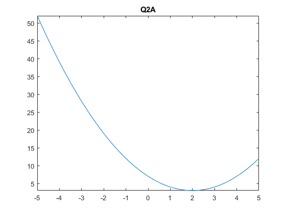
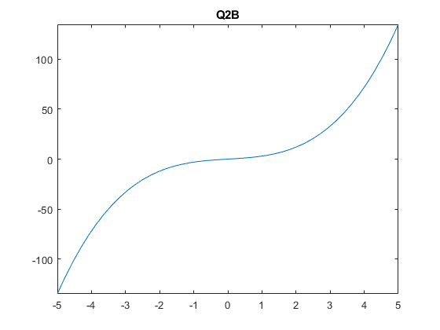
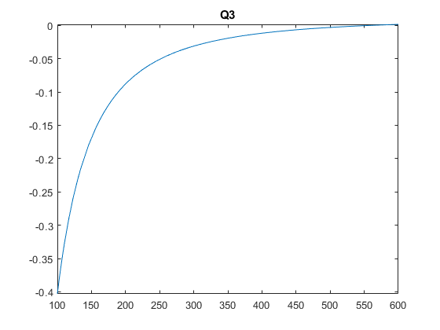
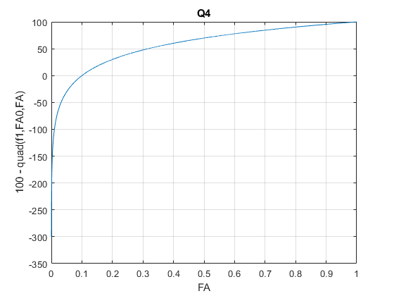
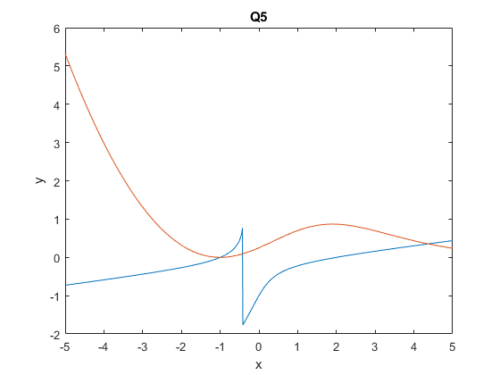
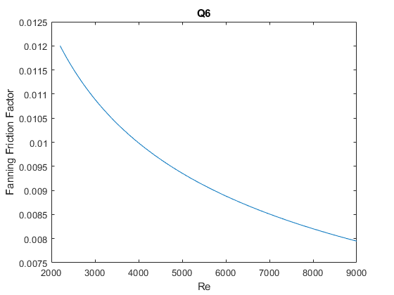

f = @(x) (x)^3 - 9*((x)^2) + 3.8197;
x = [0 6];
a = fzero(f, x);
f = @(x) (x)^2 - 4*(x) + 7;
x = [-1 3];
figure(1)
fplot(f)
title('Q2A')
y = 1;
z = 1;
f = @(x) (x)^3 + 2*(x)*(y)*((z)^2)-(y)*(z)+1;
figure(2)
fplot(f)
title('Q2B')
b = fzero(f,[-1 1]);
Ca0 = 2000;
V=0.01;
v=0.0005;
k=0.00023;
g = @(Ca) V-v*(Ca0-Ca)./(k*Ca.^2);
figure(3)
fplot(g, [100 600])
title('Q3')
fsolve(@(Ca) g(Ca),520)
x=fsolve(g,500);
a1=g(x);
options=optimset( 'Display','iter');
[X,FVAL,EXITFLAG,OUTPUT]=fsolve( g, 500,options);
options=optimset('TolFun',1e-9);
[x2,FVAL,EXITFLAG,OUTPUT ]=fsolve( g,500,options);
a2=g(x2);
sprintf('The concentration for 1st tolerance is %1.2f mol/L',x2')
[X,FVAL,EXITFLAG,OUTPUT ]=fsolve( g,500,options);
options=optimset('TolFun',1e-15);
[x3,FVAL,EXITFLAG,OUTPUT ]=fsolve(g,500,options);
a3=g(x3);
sprintf('The concentration for 2nd tolerance is %1.2f mol/m^3',x3')
syms FA
k=0.23;
FA0=1;
v0=10;
fn = (1./(-(k.*FA)./v0));
q(FA) = int(fn,FA0,FA);
FA_span = 1:-0.0001:0.0000001;
y1 = 100 -(q(FA_span));
figure(4)
plot(FA_span, y1)
title('Q4')
xlabel('FA')
ylabel('100 - quad(f1,FA0,FA)')
grid on
k = 0.23;
v0 = 10;
fun = @(Fa) 100 - (log(Fa)/(-k/v0));
x0 = 0.5;
FA = fsolve(fun,x0);
CA = FA/v0;
f=@(x,y) 2+x+y-x^2+8*x*y+y^3;
g=@(x,y) 1+2*x-3*y+x^2-y*exp(x);
x=linspace(-5,5,1000);
fx=arrayfun(@(x) fzero(@(y) f(x,y),0.1),x);
gx=arrayfun(@(x) fzero(@(y) g(x,y),0),x);
figure(5)
plot(x,fx,x,gx)
title('Q5')
xlabel('x')
ylabel('y')
f1=@(z) [f(z(1),z(2));g(z(1),z(2))];
fsolve(f1,[-1 0])
T = 298;
Q = 2.5/1000;
P = 103*1000;
L = 100;
d = 46.08+9.418*T-0.0329*T^2+(4.882*1e-5*T^3)-2.895*T^4*1e-8;
u = exp(-10.547+541.69/(T-144.53));
Re = linspace(2200,9000);
f = arrayfun(@Fanning_Friction_Factor,Re);
figure(6)
plot(Re,f)
title('Q6')
xlabel('Re')
ylabel('Fanning Friction Factor')
D = fzero(@findD,0.04);
sprintf('The diameter of the pipe is = %s\n', D)
function fF = Fanning_Friction_Factor(Re)
if Re<2100
fF = 16/Re;
fprintf('Laminar Flow')
else
fx = @(f) 1/sqrt(f)-(4.0*log10(Re*sqrt(f))-0.4);
fF = fzero(fx,0.01);
fprintf('Turbulent Flow')
end
end
function z = findD(D)
T = 298;
Q = 2.5/1000;
P = 103*1000;
L=100;
d=46.08+9.418*T-0.0329*T^2+(4.882*1e-5*T^3)-2.895*T^4*1e-8;
u=exp(-10.547+541.69/(T-144.53));
v = Q/(pi*D^2/4);
Re = D*v*d/u;
fF = Fanning_Friction_Factor(Re);
z = P - 2*fF*d*L*v^2/D;
end
Warning: Function behaves unexpectedly on array inputs. To improve performance,
properly vectorize your function to return an output with the same size and
shape as the input arguments.
Warning: Function behaves unexpectedly on array inputs. To improve performance,
properly vectorize your function to return an output with the same size and
shape as the input arguments.
Equation solved at initial point.
fsolve completed because the vector of function values at the initial point
is near zero as measured by the default value of the function tolerance, and
the problem appears regular as measured by the gradient.
ans =
520
Equation solved at initial point.
fsolve completed because the vector of function values at the initial point
is near zero as measured by the default value of the function tolerance, and
the problem appears regular as measured by the gradient.
Norm of First-order Trust-region
Iteration Func-count f(x) step optimality radius
0 2 9.26276e-06 1.85e-07 1
Equation solved at initial point.
fsolve completed because the vector of function values at the initial point
is near zero as measured by the default value of the function tolerance, and
the problem appears regular as measured by the gradient.
Equation solved.
fsolve completed because the vector of function values is near zero
as measured by the selected value of the function tolerance, and
the problem appears regular as measured by the gradient.
ans =
'The concentration for 1st tolerance is 559.55 mol/L'
Equation solved.
fsolve completed because the vector of function values is near zero
as measured by the selected value of the function tolerance, and
the problem appears regular as measured by the gradient.
Equation solved.
fsolve completed because the vector of function values is near zero
as measured by the selected value of the function tolerance, and
the problem appears regular as measured by the gradient.
ans =
'The concentration for 2nd tolerance is 559.58 mol/m^3'
Equation solved.
fsolve completed because the vector of function values is near zero
as measured by the default value of the function tolerance, and
the problem appears regular as measured by the gradient.
Equation solved at initial point.
fsolve completed because the vector of function values at the initial point
is near zero as measured by the default value of the function tolerance, and
the problem appears regular as measured by the gradient.
ans =
-1 0
Turbulent FlowTurbulent FlowTurbulent FlowTurbulent FlowTurbulent FlowTurbulent FlowTurbulent FlowTurbulent FlowTurbulent FlowTurbulent FlowTurbulent FlowTurbulent FlowTurbulent FlowTurbulent FlowTurbulent FlowTurbulent FlowTurbulent FlowTurbulent FlowTurbulent FlowTurbulent FlowTurbulent FlowTurbulent FlowTurbulent FlowTurbulent FlowTurbulent FlowTurbulent FlowTurbulent FlowTurbulent FlowTurbulent FlowTurbulent FlowTurbulent FlowTurbulent FlowTurbulent FlowTurbulent FlowTurbulent FlowTurbulent FlowTurbulent FlowTurbulent FlowTurbulent FlowTurbulent FlowTurbulent FlowTurbulent FlowTurbulent FlowTurbulent FlowTurbulent FlowTurbulent FlowTurbulent FlowTurbulent FlowTurbulent FlowTurbulent FlowTurbulent FlowTurbulent FlowTurbulent FlowTurbulent FlowTurbulent FlowTurbulent FlowTurbulent FlowTurbulent FlowTurbulent FlowTurbulent FlowTurbulent FlowTurbulent FlowTurbulent FlowTurbulent FlowTurbulent FlowTurbulent FlowTurbulent FlowTurbulent FlowTurbulent FlowTurbulent FlowTurbulent FlowTurbulent FlowTurbulent FlowTurbulent FlowTurbulent FlowTurbulent FlowTurbulent FlowTurbulent FlowTurbulent FlowTurbulent FlowTurbulent FlowTurbulent FlowTurbulent FlowTurbulent FlowTurbulent FlowTurbulent FlowTurbulent FlowTurbulent FlowTurbulent FlowTurbulent FlowTurbulent FlowTurbulent FlowTurbulent FlowTurbulent FlowTurbulent FlowTurbulent FlowTurbulent FlowTurbulent FlowTurbulent FlowTurbulent FlowTurbulent FlowTurbulent FlowTurbulent FlowTurbulent FlowTurbulent FlowTurbulent FlowTurbulent Flow
ans =
'The diameter of the pipe is = 3.897169e-02
'
     